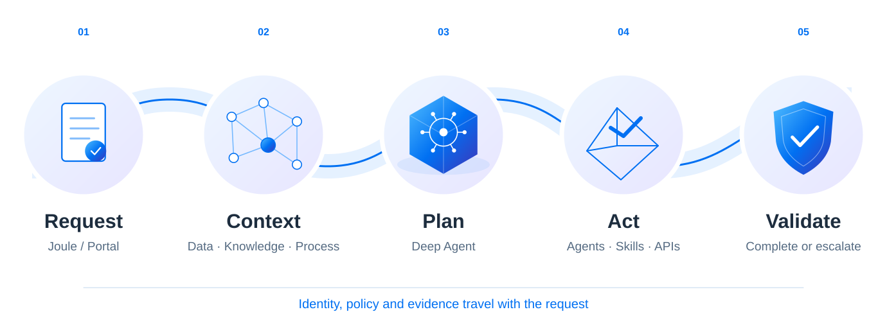

SAP BTP AI
06 · END-TO-END EXECUTION
One request. One governed path to action.
“Analyze today’s SCM exceptions and take the permitted actions.”

Complete permitted work. Escalate when a decision needs a person.
06 · END-TO-END EXECUTION
“Analyze today’s SCM exceptions and take the permitted actions.”

Complete permitted work. Escalate when a decision needs a person.